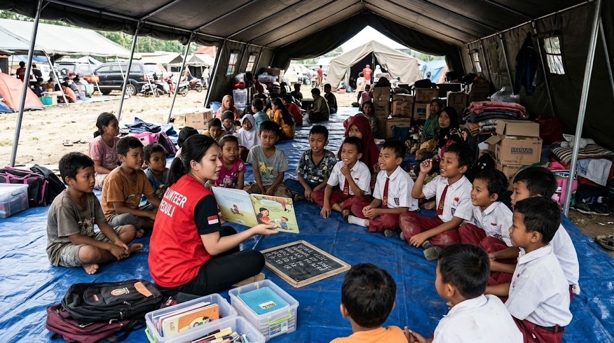

1.450+ Relawan Aktif di Lapangan


99.4%
Terverifikasi
Bantuan Diterima Tepat Sasaran
MISI KEMANUSIAAN TERPADU
Mengubah Duka Menjadi Senyum dan Harapan Baru
Komitmen kami tidak berhenti saat banjir surut atau gempa mereda. Relawan JiwaPeduli mendampingi para penyintas hingga mereka memiliki hunian yang layak, anak-anak kembali tersenyum di sekolah darurat, dan roda perekonomian keluarga kembali berputar.